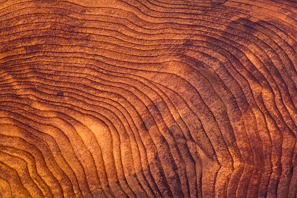

Non arrediamo spazi, ma domiamo il riverbero della materia primordiale attraverso il rigore dell’alchimia.

Non ci limitiamo a tagliare tronchi, ma sezioniamo con rispetto il silenzio di secoli per rivelare la memoria organica impressa in ogni singola venatura. Ogni asse diventa così un archivio di vita, dove il calore della fibra ancestrale incontra il rigore del design contemporaneo, trasformando la porosità selvaggia della materia in una superficie vibrante che non chiede solo di essere guardata, ma di essere ascoltata attraverso il tatto.

Plasmato dal riverbero del fuoco, il nostro bronzo si svela in una stratificazione di linee pure, dove ogni riflesso è un dialogo tra la forza bruta del metallo e la precisione del gesto umano. Non è semplice materia silente, ma un corpo vivo che vibra di calore ambrato, pronto a mutare pelle attraverso l'ossidazione per raccontare il passaggio del tempo.